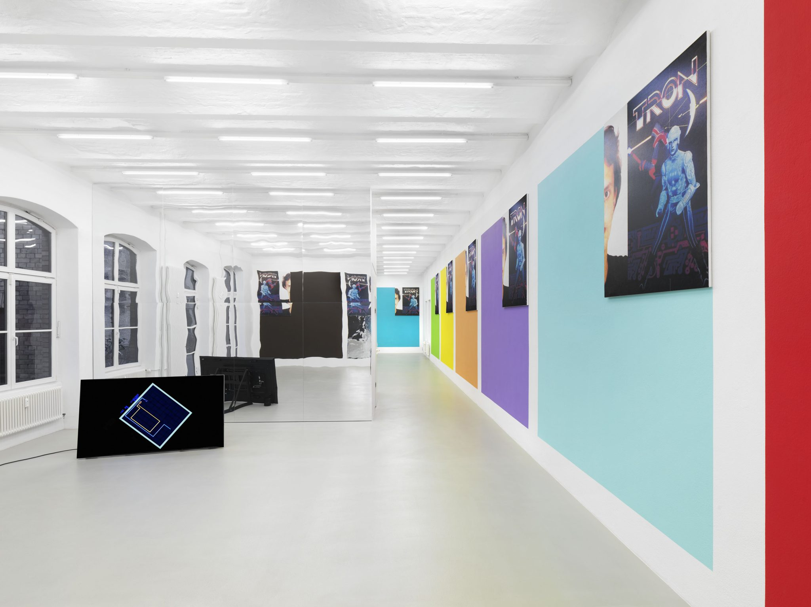
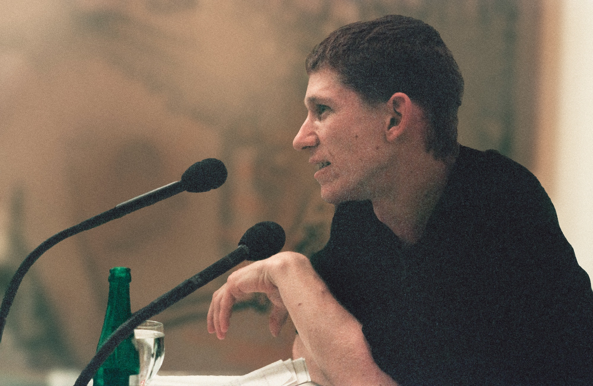
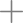
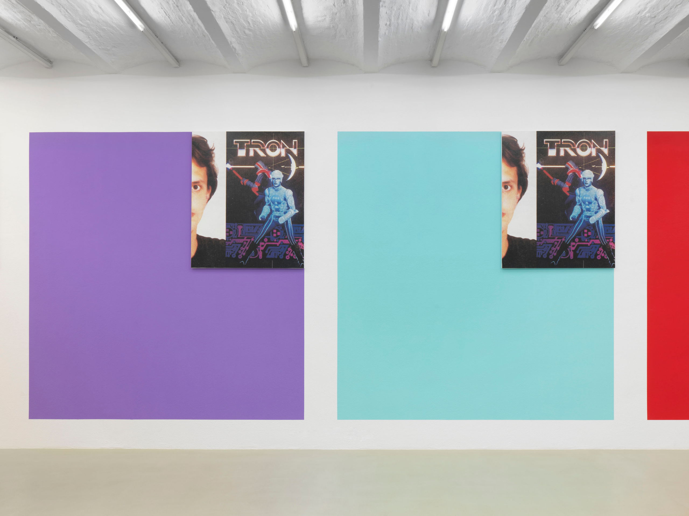

Knaackstrasse 12 | 10405 Berlin
Open Saturdays 11 – 6 pm, and by appointment. Please contact us at
info@michelmajerus.com.
Please note that we will be closed on Saturday, October 3rd in
observance of German Unity Day.

Michel Majerus (1967–2002) was a Luxembourgish artist whose work brought painting into conversation with the images and technologies of contemporary life. Drawing on sources ranging from art history and popular culture to video games and digital media, he developed a vivid visual language of layered imagery, shifting scale, and exuberant color.
Majerus’s paintings and installations often combine gestural marks, text, logos, and borrowed images. Rather than treating these elements as separate, he brought them together in expansive compositions that reflect the speed and density of the image-saturated world around him. His work engages the history of painting while continually testing its boundaries across canvas, architecture, and digital space.
He studied at the Staatliche Akademie der Bildenden Künste in Stuttgart and emerged as a distinctive voice in contemporary art during the 1990s. His work has since been presented internationally and remains influential for its restless energy and its open, exploratory approach to painting.
Michel Majerus died in a plane crash in Luxembourg in 2002, aged 35. The estate preserves and supports access to his work and legacy.
The Michel Majerus Estate, housed in the artist’s former studio, is dedicated to researching, presenting, and contextualizing the work of Michel Majerus (1967–2002), and preserving the cultural legacy of an extensive oeuvre created during a short period that began in the late 1980s. In this time, he developed a distinctive visual language that freely drew upon subcultures, mass media, nascent digital technologies and a wide array of art-historical sources, reintegrating their components into his compositions and installations. Since 2012, the Michel Majerus Estate has invited guest curators, scholars and artists to engage with Majerus’s practice through exhibitions and projects staged at the Estate. Previous collaborators include Brigitte Franzen, Fabian Schöneich, Joseph Kosuth, Peter Pakesch, Jordan Wolfson, and Cory Arcangel.
For further information please contact the Michel Majerus Estate:
info@michelmajerus.com
Press inquiries:
press@michelmajerus.com
+49 30 47377300
(selected works)
Current Exhibition


TRON
curated by Daniel Birnbaum & Jacqui Davies
May 2, 2026 – March 21, 2027
curated by Daniel Birnbaum & Jacqui Davies
May 2, 2026 – March 21, 2027
Over the years, through its repeated appearances in film, hacker culture, gaming, and digital finance, the name TRON has accumulated a notable cultural and aesthetic charge. The new exhibition at the Michel Majerus Estate presents ten works from Michel Majerus’s distinctive eponymous series (1999), marking the first large-scale presentation since they debuted in the exhibition as soon as possible at Gió Marconi Gallery in Milan nearly three decades ago. A collaborative project by Daniel Birnbaum and Jacqui Davies, the exhibition TRON constructs a speculative environment in which cinematic interventions become a framework for a layered reading of Michel Majerus’s work.
Two video collages by Jacqui Davies introduce a moving image
dimension that extends and complicates the visual field,
reinforced by a reflective wall. The artist’s former studio
is transformed into a spatial index of the network of
references underlying the Tron works.
The large monochrome color fields of the Tron works
are painted directly onto the wall in bright hues drawn from
the Pantone palette. In the upper right corner of each, a
silkscreen print is mounted, juxtaposing a promotional image
from the Disney film TRON (1982) with a cropped portrait of
the Berlin hacker Boris Floricic, who used the pseudonym
TRON. The sequential numbering in the titles of the works,
the Pantone color codes and the serially produced screen
prints evoke technical manufacturing processes that, in
combination with the abstract color fields, challenge the
conventional notion of painting. At the same time, the
motifs evoke tech subcultures, cinematic imagination, digital
gaming worlds, and their grounding in reality. The serial
conception and the spatially expansive installation generate
a dense field of tension in which references circulate as
a distinct and processual material.
Majerus’s artistic practice has long been a point of inquiry
for Daniel Birnbaum: From his early review of Majerus’s
exhibition Space Safari 1997 at Anders Tornberg
Gallery in Stockholm, to their 2002 collaboration
on Sozialpalast, the site-specific installation that
temporarily covered Berlin’s Brandenburg Gate with the image
of Schöneberg’s Pallasseum housing complex, Birnbaum situated
Majerus’s practice within the “expanded field” of painting,
where it operates simultaneously as painting, installation,
sculpture, and architecture.
The exhibition TRON highlights moving image, gaming, and
digital systems as further integral aspects of Majerus’s
artistic logic. TRON offers a multidimensional experience
which opens the artist’s practice to new dialogues,
presenting the works as points of convergence for cultural,
temporal, visual, theoretical and affective narratives.
On the occasion of Gallery Weekend Berlin, an English
language curatorial tour with Daniel Birnbaum and Jacqui
Davies will accompany the exhibition on May 2 at 11 am,
no registration required, but space is limited.
Events/Tours
On the occasion of Gallery Weekend Berlin, an English language curatorial tour with Daniel Birnbaum and Jacqui Davies accompanies the exhibition on May 2 at 11 am. No registration required; space is limited.
For appointments, contact info@michelmajerus.com.
Publications

For information about publications, please contact the Michel Majerus Estate.
info@michelmajerus.com